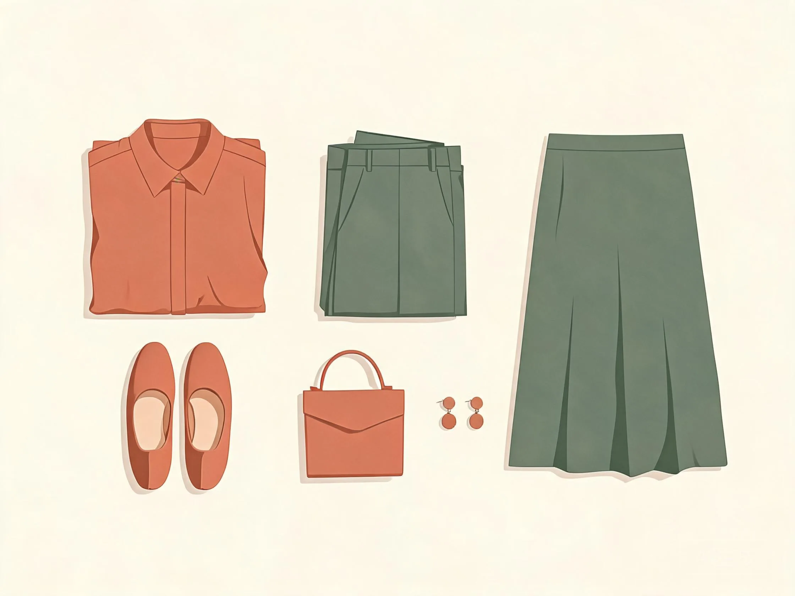
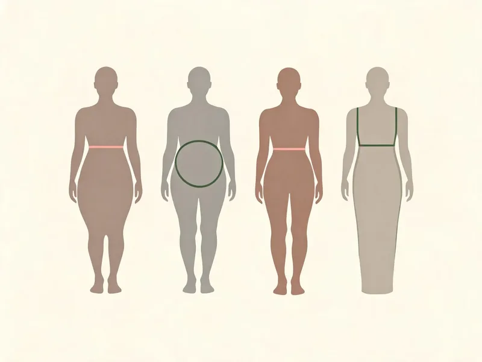
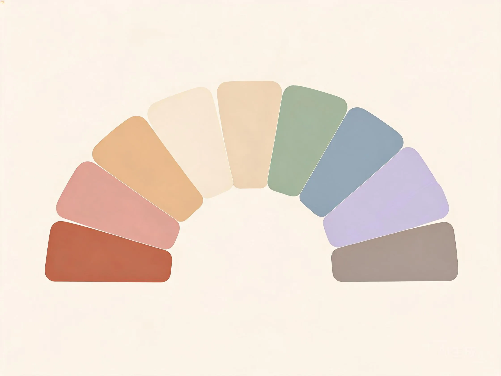
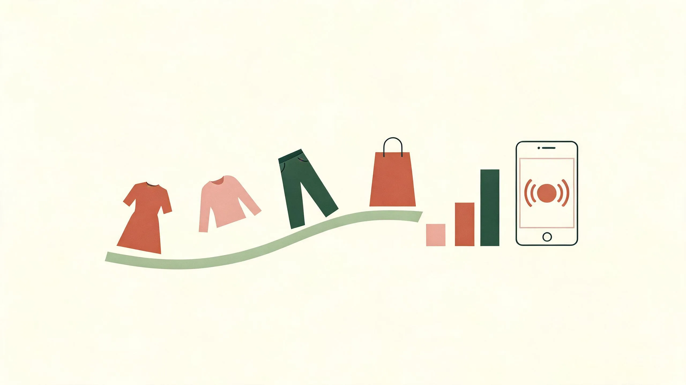

中年必备基础款：十件单品的身形优化穿法
- 身形优化靠版型，不靠节食——选对十件基础款就够用。
- 肚子大：中长款针织开衫敞开穿 + V 字开口拉长。
- 胯宽腿粗：高腰阔腿裤 / 过膝 A 字裙，上紧下松。
- 想显高：衬衫前塞后放提腰线，卷袖露出手腕。
- 显腿长：尖头鞋（裸色最佳）+ 中等挺括包。
一句话：把视线引到最瘦处，把赘肉交给版型去藏。
40 岁以后，身材会悄悄变化：腰腹堆肉、手臂松弛、胯宽腿粗。选对基础款，用版型优化身形比靠节食更管用。下面十件是中大淑衣橱的"定海神针"，每件都给出比例修长穿法和避雷点。
| 单品 | 比例修长穿法 | 避雷 / 细节 |
|---|---|---|
| 针织开衫 | 选垂顺冰丝 / 莫代尔，中长款过臀最遮肚子；敞开当外套 + 内搭吊带或背心，V 字开口拉长上半身；系扣穿选宽松款留松量。 | 避开紧身短款（勒肚子）；粗棒针显壮。 |
| 阔腿裤 | 高腰 + 垂顺面料（醋酸 / 铜氨丝），裤腿宽于大腿 5cm 左右；配短上衣或塞衣角提腰线；同色系延伸纵向线条。 | 别过宽显垮；面料要挺，软塌贴腿更显臃肿。 |
| A 字半身裙 | 过膝 A 字遮胯藏大腿；腰头选有松紧或微弹的；配修身针织上衣，上紧下松比例最修长。 | 避开包臀裙、百褶（显胯宽）；长度在膝下 5–10cm。 |
| 衬衫 | 选微宽松版型，前塞后放（塞一半衣角）造腰线；卷袖到前臂中段露手腕比例修长；V 领 / 方领拉长颈线。 | 避开紧身裹身、泡泡袖；丰盈选开衩下摆。 |
| 风衣 | 敞开穿 = 松弛飒爽，系腰带 = 利落收腰；卡其 / 藏青最百搭；内搭修身针织避免臃肿。 | 小个子选膝上款，配尖头踝靴露脚踝。 |
| 羊绒 / 羊毛衫 | 选中等厚度、垂坠感好的；V 领拉长颈线（苹果形友好）；半塞衣角提腰线；外搭风衣或西装。 | 避开厚粗棒针（显壮）；浅色显膨胀，选深色或中灰。 |
| 醋酸上衣 | 三醋酸垂坠爽滑、不易皱；微宽松版型藏腰腹；配高腰阔腿裤或 A 字裙，上下材质对比显高级。 | 二醋酸偏干涩，认准成分标；别选太紧身贴肚子。 |
| 直筒 / 烟管裤 | 中高腰 + 垂顺面料；九分长度露脚踝显轻盈；配尖头鞋延长腿部线条。 | 避开低腰、紧身小脚裤；裤腿别太窄贴小腿。 |
| 连衣裙 | 选有腰线设计（收腰 / 系带 / Empire 高腰）；V 领 / 方领比例修长；及膝或小腿中部长度最得体；材质垂顺不贴身。 | 避开无腰线直筒裙（显矮显臃肿）；太紧身暴露肚腩。 |
| 鞋与包 | 尖头鞋延长腿部（裸色最显腿长、黑色最百搭）；跟高 3–5cm 最稳；包选中等大小、挺括版型，颜色与衣服呼应。 | 避开超厚底松糕鞋（显笨重）；大包压个子。 |
搭配公式库：九条适合中年身材的比例修长公式
- 三大主力：上紧下松、外长内短、腰线提升。
- 显高显脸小：同色系延伸、V 领拉长。
- 露肤点：手腕、脚踝、颈——全身遮严也要露这三处。
- 别 50/50 对半切，用 1:3 / 2:3 分段。
- 配饰做 10% 点缀，不超过 3 件。
一句话：转移视线 + 拉长线条 + 遮住赘肉，九条公式都为此服务。

中年身材的核心矛盾是「腰腹发福 + 皮肤松弛」。下面九条公式都围绕一个目标：转移视线、拉长线条、遮住赘肉，让穿搭既得体又比例修长。
| 公式 | 做法 | 为什么适合中年 |
|---|---|---|
| 上紧下松 | 上身修身（但不勒），下身用阔腿裤 / A 字裙 / 直筒裤。 | 把视线从腰腹移到腿部，遮住发福的下半身。 |
| 同色系延伸 | 上下身同一色系不同深浅，制造一条完整的竖线。 | 纵向线条显高挑、比例修长，不用露腿也能拉长比例。 |
| 外长内短 | 长开衫 / 长风衣 + 短内搭，内搭塞衣角提腰线。 | 外层遮挡腰腹，内层腰线还在，身形优化又显高。 |
| V 领拉长 | V 领 / 方领 / U 领上衣，露出颈部和锁骨。 | 颈部线条拉长显脸小、显精神，避开圆领显脸大。 |
| 腰线提升 | 高腰裤 / 高腰裙 + 塞衣角 / 系腰带，腰线提到肚脐上方。 | 腰线在哪里腿就从哪里开始，直接拉长下半身。 |
| 松紧结合 | 一松一紧最稳，全身都松显邋遢，全身都紧暴露赘肉。 | 找到身材最瘦的部位（手腕、脚踝、颈）露出来。 |
| 繁简平衡 | 上繁下简或上简下繁，印花面积 ≤ 30%。 | 中年穿大面积印花易显俗，小面积点缀更得体。 |
| 材质对比 | 硬 × 柔：针织 + 醋酸裙、风衣 + 雪纺、皮衣 + 真丝。 | 材质对比显高级，比纯色更有层次但不花哨。 |
| 配饰点睛 | 丝巾、胸针、项链、耳饰做 10% 点缀，不超过 3 件。 | 中年人的精致感靠配饰，但多了显累赘。 |
穿搭的底层逻辑：四条原理，推导一切穿法
- 平衡宽度：腰腹宽就把量感上移到肩颈，胯宽就下移到脚踝。
- 定义腰线：腰线在哪里，腿就从哪里开始。
- 露出最细处：手腕、脚踝、颈部、锁骨。
- 三分法：全身按 1:3 或 2:3 分段，切忌 50/50。
一句话：诊断 → 遮挡 → 转移 → 点睛，四步走。
中年穿搭看似要注意很多细节，其实都收敛到四条底层原理。掌握它们，面对任何单品都能自己判断"能不能穿、怎么穿"，而不是盲目跟风。
1 · 平衡宽度（Balance）
把视觉量感从最宽处移开。腰腹宽就把量感上移到肩颈，胯宽就把量感下移到脚踝，让整体轮廓接近"上宽下窄"或"上窄下宽"，而不是中间鼓出来。
2 · 定义腰线（Define the Waist）
腰带、颜色分割、高腰单品、收腰缝线都是"造腰线"的工具。腰线在哪里，腿就从哪里开始——中年发福后腰线模糊，重新定义腰线是比例修长的核心杠杆。
3 · 露出最细处（Length）
手腕、脚踝、颈部、锁骨是四个最能优化比例的"露肤点"。即使全身遮得严实，露出手腕和脚踝也能让人看起来轻盈；V 领露出锁骨拉长上半身。
4 · 三分法（Rule of Thirds）
全身视觉按 1:3 或 2:3 分段（短上衣 + 高腰下装，或长外套 + 短内搭），切忌 50/50 对半切——对半会把身体"拦腰截断"，显矮显敦实。
身形诊断与扬长避短（含中年体型变化）
- 苹果形 O（中年最常见）：V 领 + 高腰 + 暗色下装，遮肚子。
- 梨形 A：上露下遮 + A 字轮廓 + 深色下装。
- 倒三角 Y：上深下浅 + 上简下繁 + 柔化肩线。
- 沙漏形 X：收腰秀曲线；直筒 H：收腰单品造腰线。
- 中年变化：腰腹发福选高腰 A 字，手臂松弛选七分袖。
一句话：先判断身形，再谈搭配——看不到腰线就自己造一条。

先判断身形，再谈搭配。40 岁后最常见的变化是腰腹脂肪堆积（苹果形增多）和胯部变宽（梨形更明显）。下面的决策树帮你快速定位。
梨形：腰细、胯宽、腿粗
原则：上露下遮 + 强调腰线，A 字轮廓。
上装：亮色、V 领 / 方领，把视线重心上拉。
下装：A 字裙、阔腿裤、直筒裤，深色更能优化身形。
避雷：紧身包臀裙、低腰裤、浅色阔腿裤。
H 型：肩腰胯接近、无明显腰线
原则：塑造腰线是唯一关键。
工具：收腰单品 + 叠穿；A 字裙、伞裙；细腰带。
色彩法：腰部用暗色腰封把腰往里收。
苹果形：腰腹丰满、四肢纤细（中年最常见）
原则：合身留松量，流畅线条转移注意力。
上装：V 领拉长颈线；避开紧身裹身、泡泡袖。
下装：高腰 + 直筒 / 阔腿，把腰线提上去。
加分：露小臂与小腿，简洁为主。
倒三角：肩宽背厚、腿部纤细
黄金公式：上深下浅 + 上简下繁 + 上紧下松。
上装：V / U / 方领、落肩款柔化肩线。
避雷：垫肩、泡泡袖、大耸肩。
沙漏形：肩≈胯、腰明显
原则：秀曲线但别太紧身，收腰 / 裹身版型。
面料：中等厚度垂坠感；真丝裙、针织裙。
避雷：过于宽大的裙子（浪费好身材）。
40 岁后体型变化应对
腰腹发福：选 Empire 高腰、A 字廓形、前开襟遮挡。
手臂松弛：选七分袖 / 中袖，避开无袖和紧身袖。
胸型下垂：选有支撑的内搭、V 领分散视线。
面料选垂顺不贴身的，比硬挺的更能优化身形。
色彩搭配：显白提气色，不刻意
- 60-30-10：主色 60%、辅助 30%、点缀 10%。
- 显白友好：暖皮用驼 / 砖红 / 米白，冷皮用雾霾蓝 / 藏青 / 酒红。
- 雷区：大面积亮黄、荧光、正橘；全身纯黑 / 纯白。
- 不刻意：降低饱和度，鲜艳色 ≤ 30% 且放下半身。
- 贴脸的颜色用适合色，不合的放到裤子、包、鞋。
一句话：大面积用安全色，小面积用点缀色。

中年女性的肤色会随年龄变化（暗黄、色斑、暗沉），穿对颜色能瞬间提气色、显年轻，穿错则显老显病态。核心是：找对适合自己的色，大面积用安全色，小面积用点缀色。
1 · 三色原则，进阶为 60-30-10
比例分配：主色约 60%、辅助色 30%、点缀色 10%。同色系不同深浅算同一种主色。中年穿搭建议主色用低饱和度的大地色 / 莫兰迪色，最安全也显高级。
2 · 显白提气色的颜色
✅ 显白友好色
暖皮：驼色、砖红、芥末黄、橄榄绿、米白、焦糖。
冷皮：雾霾蓝、薰衣草紫、玫红、藏青、纯白、酒红。
中性万能：米白、浅灰、深蓝、深绿、勃艮第红。
❌ 显老显黄雷区
大面积亮黄、荧光色、正橘色（显黄显黑）。
全身纯黑（气色不好显憔悴，用深灰 / 藏青替代）。
全身纯白（除非冷白皮，否则显苍白）。
雷区颜色可以小面积用在下装、鞋、包。
3 · 不刻意的色彩法则
- 降低饱和度：粉色选灰粉 / 豆沙粉，不是芭比粉；蓝色选雾霾蓝，不是宝蓝。
- 控制鲜艳色面积：红色、紫色等鲜艳色 ≤ 30%，且用在下半身或配饰。
- 大地色是中年挚友：驼、米、棕、卡其、燕麦，怎么穿都得体。
- 同色系最显高级：一身不同深浅的棕 / 灰 / 蓝，比撞色更有质感。
4 · 肤色冷暖快速判断
- 手腕静脉偏绿 = 暖调；偏蓝紫 = 冷调。
- 金饰更衬 = 暖；银饰更清透 = 冷。
- 米白让气色更好 = 暖；纯白布让脸更透亮 = 冷。
- 珊瑚 / 橘调唇色自然 = 暖；玫瑰 / 梅子调更服帖 = 冷。
落地：贴近脸的颜色（上衣、围巾、耳环）用适合色；不合的颜色放到裤子、包、鞋。
5 · 四季色彩（Color Season）
按底色冷暖 + 明度 / 纯度分为四型，帮你找到最衬的色板。
| 型 | 特征 | 适合色 | 打底建议 |
|---|---|---|---|
| 春 | 暖 · 明亮 | 珊瑚、明黄、嫩绿、桃粉 | 米白 / 驼 / 棕 |
| 夏 | 冷 · 柔和 | 薰衣草紫、粉扑粉、天空蓝、灰粉 | 白 / 灰 / 藏青 |
| 秋 | 暖 · 深沉 | 驼色、芥末黄、卡其、砖红、橄榄绿 | 米白 / 驼 / 棕 |
| 冬 | 冷 · 鲜艳 | 纯白、黑、深藏青、品红、正红、酒红 | 白 / 灰 / 藏青 |
场景穿搭指南：中年女性八大高频场景
- 通勤：纯色垂感衬衫 + 高腰西装裤。
- 婚宴：酒红 / 墨绿 / 藏青，避开大红、纯白、黑。
- 同学聚会：显白上衣 + 深色下装，气色胜过潮流。
- 旅行：纯色连衣裙 + 舒适平底鞋，上镜又好走路。
- 接娃 / 见家长 / 广场舞 / 带孙：得体、方便活动、别太休闲。
一句话：得体为主，别抢新娘风头。
中年女性的社交场景和年轻时完全不同。下面八个高频场景，每个都给得体又比例修长的穿法，可直接对照做成店铺场景化专题。
👔 通勤 / 职场
选浅色、垂顺、微宽松；避开牛仔、紧身、超短裙。
公式：纯色垂感衬衫 + 高腰西装裤；简约连衣裙 + 薄开衫；V 领针织 + 烟管裤。鞋选尖头（3–5cm，裸色最显腿长）。
💍 婚宴 / 喜宴
得体为主，别抢新娘风头：避开大红、纯白、黑色。
公式：酒红 / 墨绿 / 藏青套装或连衣裙；面料选醋酸 / 真丝显质感；配饰精致不夸张。
🎉 同学聚会
要的是"气色好、状态年轻"，不是刻意扮年轻。
公式：显白色上衣 + 深色下装；一条质感连衣裙 + 小外套；妆发干净，气色胜过潮流。
🏫 接娃 / 见老师
得体、方便活动、不邋遢。
公式：针织衫 + 直筒裤；衬衫 + A 字裙；配色干净，别太休闲也别太正式。
👴 见亲家 / 见家长
稳重、端庄、有家教感。
公式：中长款风衣 + 连衣裙；套装 + 低跟鞋；颜色选大地色 / 藏青，别太艳。
✈️ 旅行 / 出游
舒适 + 上镜 + 好走路。
公式：纯色连衣裙 + 舒适平底鞋；同色系搭配拍照不挑背景；带一件薄外套应对温差。
💃 广场舞 / 休闲运动
舒适、方便活动、吸汗透气。
公式：速干 T 恤 + 运动裤；宽松棉麻套装；选亮色显气色，鞋子选软底防滑。
👵 带孙辈 / 日常
方便抱孩子、耐脏、不勒不紧。
公式：宽松针织 + 弹力裤；前开衫方便穿脱；颜色耐脏（深蓝、卡其、灰），鞋子选平底防滑。
尺码指南与退货率控制
- 国内女装平均退货率 50–60%，直播场景 80%+。
- 首要原因：尺码不合 / 标准混乱。
- 尺码表清单：双单位 + 测量图、参考体型列、多角度试穿（正 / 侧 / 坐）。
- 退货成本：约 10 元 / 单，死库存占 30–50%。
一句话：尺码表做得越细，退货越少。

退货率是女装经营第一成本项，而中大淑客群对尺码更敏感（身材变化大、版型不合直接退）。尺码表做得越细，退货越少。
7.1 退货率有多高
中大淑退货率更高的原因：中年身材个体差异大（同样 120 斤，腰腹和胯的分布完全不同），尺码不准 = 必退。
7.2 高退货率从哪来
- 尺码不合 / 标准混乱（首要）：同一店铺"L 码"标准不一，中年顾客更难选。
- 货不对板、色差：直播打光过度导致"到手变色"。
- P 图过度拉高预期。
- 商家侧：价格内卷 → 降成本用差面料。
- 平台规则放大：运费险 + 仅退款被当作"免费试衣间"。
7.3 中大淑尺码表优化清单
- 双单位 + 测量示意图（厘米 / 尺码对照）
- 加"参考体型"列（身高 / 体重 / 腰围 / 肚围 / 宽松度）
- 模特试穿数据 + 多角度（正 / 侧 / 坐，必须能看出肚腩和胯）
- 一衣多穿演示
- AI 尺码推荐（身高体重体型 → 款式）
- 买家秀 / 真实测量图（中年真实体型的买家秀最有说服力）
天猫服饰大数据身形推荐与头部商家合作后退货率下降约 2–3 个点。中大淑品类做身形推荐，效果比年轻女装更明显。
7.4 退货的真实成本
约 5 元 / 单
运费险成本。
约 10 元 / 单
单笔退货可见成本。
30–50%
死库存占比。
直播带货话术（面向中大淑客群）
- 时间配比：留人 20% — 讲品 35% — 价值 25% — 促单 20%。
- 称呼用「姐姐 / 姐妹们」，不用「宝宝 / 家人们」。
- 八段模板：开场留人 → 互动筛人群 → 痛点刺激 → 讲品 → 上身演示 → 价格锚点 → 逼单 → 追单。
- 承诺要落地：7 天无理由 + 运费险。
一句话：七成时间建信任，三成促成交易。
中大淑客群不吃"宝宝们""家人们"那套，她们要的是质感、身形优化、体面、不挑身材。话术要"说人话、懂她们、给信心"。
8.1 四段结构与时间配比
留人 20% — 讲品 35% — 价值 25% — 促单 20%；七成时间建立信任，三成促成交易。
- 开场留人（30 秒）：①我是谁卖什么 ②今天什么福利 ③停留能得到什么。
- 互动框人："身高体重打评论区，我帮你推荐码数"。
- 塑品：面料术语翻译成人话（"高密度"→"挺括不易皱"）。
- 价值塑造：价格锚定 + 场景 + 信任保障前置。
- 促单：专属价 + 限时限量 + 行动指令，不超过 20%。
8.2 中大淑可填空话术模板
① 暖场 / 开场留人
"姐妹们好，这里是【店铺名】，专做 40+ 姐姐的穿搭。今天这款是专门为【腰腹有肉 / 胯宽】的姐姐设计的，比例修长又体面，专享价【X】元。"
② 互动筛选人群
"第一次来扣 1。身高【__】、体重【__】、腰围【__】打评论区，我帮你推荐码数。自己穿扣 1，给妈妈 / 婆婆买扣 2。"
③ 痛点刺激
"有没有姐姐跟我一样——肚子上的肉怎么都减不掉，穿紧身衣勒得慌，穿宽松又显臃肿？这款就是专门遮肚子的，你看……"
④ 产品讲解（身形优化版）
"这个版型叫【A 字 / 高腰 / 收腰】，专门遮【肚子 / 胯 / 手臂】。【面料】就是——摸起来垂顺，穿上不贴身、不显肚子，机洗不皱。"
⑤ 上身演示
"我现在穿【尺码】，身高【__】体重【__】，肚子上也有肉，你看正面、侧面、坐下，都不勒也不显肚子。搭【单品】是休闲风，搭【单品】是正式风。"
⑥ 价格锚点
"你去商场买【同面料同版型】要【五六百】，我们直播间只要【一百多】。商场的货也是从这些工厂出来的，今天直接给你工厂价。"
⑦ 逼单 / 促单
"这款日常售价【298】，今天直播间只要【158】，只有这一场。这个颜色只剩最后【30】件，拍完就下架，姐姐们手快有手慢无。"
⑧ 追单 / 收尾
"没抢到的姐姐，我再上一波库存，只有【X】件。买回去试，不合适 7 天无理由退，运费险我出。关注我，明天上新第一时间通知。"
内容选题日历（中大淑品类季节节奏）
- 主线：季前上、季中促、季末清。
- 送礼节点重点盯：妇女节、母亲节、春节。
- 3 月春装黄金期 + 3·8；5–6 月母亲节 + 618；11–12 月双 11 / 双 12。
一句话：内容提前 1 个月备货，别等季节到了才上架。
通用主线：季前上、季中促、季末清。中大淑品类要特别关注母亲节、妇女节、春节等送礼节点。
- 1–2 月冬装清仓 · 新年新衣 · 春节送礼
- 3 月春季上新 · 3·8 妇女节主题
- 4 月春装收尾 · 夏装预热 · 母亲节备货
- 5–6 月夏季主推 · 母亲节 · 618
- 7–8 月夏清仓 · 早秋上新
- 9–10 月秋装旺季 · 冬装备货 · 国庆
- 11–12 月双 11 / 双 12 · 冬装主推 · 年终送礼
| 月份 | 货品动作 | 内容选题方向 |
|---|---|---|
| 1–2 月 | 冬装清库；2 月春款启动 + 春节预热 | "过年见家长穿搭""红色系显白""给妈妈买新衣" |
| 3 月 | 春季黄金期 + 3·8 节 | "春季必备单品""中年通勤一周穿搭""3·8 送礼推荐" |
| 4 月 | 春装收尾、切入夏装 | "比例修长裙装""防晒穿搭""母亲节礼物清单" |
| 5–6 月 | 夏款主力 + 母亲节 + 618 | "显白配色""清凉面料实测""婚宴穿搭" |
| 7–8 月 | 夏清仓 + 早秋预售 | "反季捡漏""早秋先穿什么""空调房穿搭" |
| 9–10 月 | 秋装旺季 + 冬装备货 | "换季叠穿""风衣 / 针织搭配公式""国庆出游穿搭" |
| 11–12 月 | 冬装主推 + 双 11/双 12 | "羽绒服 / 大衣挑选""保暖套装""年终聚会穿搭" |
竞品与爆款拆解（中大淑品牌）
- 竞品 = 抢同一批客、卖同类商品、价格带 ±20%。
- 四维拆解：拆卖点 / 拆评价 / 拆内容 / 拆数据。
- 头部对标：哥弟、玖姿、朗姿、音儿、玛丝菲尔、波司登。
- 合规红线：抄结构，不抄素材。
一句话：把竞品差评点做成自己的卖点。
竞品 = 抢同一批中大淑客户、卖同类商品、价格带接近（±20%）的店铺。国内中大淑头部品牌是最好的拆解对象。按四维拆解。
国内中大淑头部品牌速览
| 品牌 | 定位 | 价格带 | 值得拆解的点 |
|---|---|---|---|
| 哥弟 Girdear | 中大淑标杆，经典百搭 | 中高（500–2000） | 版型经典、一衣多穿、成套搭配 |
| 玖姿 JZ | 成熟优雅，安正时尚旗下 | 中高（400–1500） | 色彩沉稳、通勤场景强 |
| 朗姿 LANCY | 高端优雅女装 | 高（800–3000） | 面料质感、版型剪裁、品牌调性 |
| 音儿 YINER | 知性优雅，影儿集团 | 中高（500–1800） | 职业女装、刘涛代言形象 |
| 诗篇 PSALTER | 影儿集团，时尚通勤 | 中高（400–1500） | 年轻态通勤、套装搭配 |
| 玛丝菲尔 Marisfrolg | 高端原创女装 | 高（1000–4000） | 原创设计、面料创新、艺术调性 |
| 渔 FISHING | 原创高端，东方元素 | 中高（600–2000） | 中式元素、刺绣、独特风格 |
| 波司登 BOSIDENG | 羽绒服专家 | 中（400–1500） | 羽绒科技、保暖、版型修身 |
面向中大淑的拆解维度表
| 维度 | 具体看什么 |
|---|---|
| 版型 / 廓形 | A 字 / X 型 / H 型、收腰结构、肩线；爆款元素（V 领、高腰、A 字廓形、遮肚设计） |
| 色彩 | 色系情绪、显白配色、低饱和大底色、大地色占比 |
| 面料 | 真丝 / 三醋酸 / 铜氨丝 / 羊绒、垂坠感、肌理、是否显肚子 |
| 卖点 | 主图首句在卖什么（= 购买理由），是否直击"身形优化 / 比例修长 / 体面" |
| 价格带 | 与自身相差 ±20% 内才算直接竞品 |
| 模特表现 | 是否用真实中年模特、站姿能否看出版型、试穿者身高尺码 |
| 评论区痛点 | 差评集中的问题 = 你的机会点（"显肚子""腋下紧""面料透"） |
| 搭配 | 一衣多穿、成套搭配、鞋包配色 |
中大淑实用资源链接库
- 六类资源：A 品牌官网 · B 熟龄博主 · C 线条优化实操 · D 面料辨别 · E 场景穿搭 · F 尺码指南。
- 点卡片打开原页面，点右侧 📋 复制链接（Ctrl / Cmd + 点在新页打开）。
一句话：先看 A 学版型，再看 C 学身形优化。
精选六类对中大淑真正有用的资源：A 国内品牌官网、B 熟龄穿搭博主 / 媒体、C 身形线条优化实操、D 面料辨别、E 场景穿搭、F 体型尺码指南。点击卡片打开原页面，点右侧 📋 可复制链接。
提示：链接在当前页打开。想保留本页，请 Ctrl/Cmd + 点击，或用右侧复制按钮复制 URL。
A · 国内中大淑品牌官网（看版型 · 看搭配 · 看价位）
B · 熟龄穿搭博主 / 媒体内容
C · 身形线条优化实操
D · 面料知识与品质辨别
E · 场景穿搭集合
F · 体型尺码指南
一页纸落地清单
- 四条线：内容线 · 详情页线 · 直播线 · 选品线。
- 节奏：每周推进一项，先补尺码表与买家秀。
一句话：一页纸，按线推进，不用一次做完。
压缩成一页可执行动作。按"内容 → 详情页 → 直播 → 选品"四条线，每周推进一项，专为中大淑品类定制。
内容线
- 每套搭配做"遮肚 / 遮胯 / 显高"标签，提高搜索命中
- 用"身形对症 + 场景合集 + 一衣多穿"养标签
- 选题对齐真实搜索词（"妈妈装""婚宴""遮肚子"）
- 按季节节奏排内容，提前 1 个月备货
详情页线
- 尺码表双单位 + 测量示意图 + 肚围
- 加"参考体型"列（身高 / 体重 / 腰围）
- 用真实中年模特试穿数据 + 多角度（正 / 侧 / 坐）
- 补齐买家秀与真实测量图
直播线
- 话术突出"身形优化 / 比例修长 / 体面"，说人话
- 开场说清"我是谁 / 卖什么 / 什么福利"
- 面料术语翻译成人话（"高密度"→"挺括不易皱"）
- 信任保障前置：7 天无理由 + 运费险
选品线
- 拆国内中大淑头部品牌（哥弟 / 玖姿 / 朗姿 / 音儿）
- 把竞品差评点做成自己的卖点
- 单品对打改"组套装"，提高客单价
- 抄结构不抄素材，避免侵权